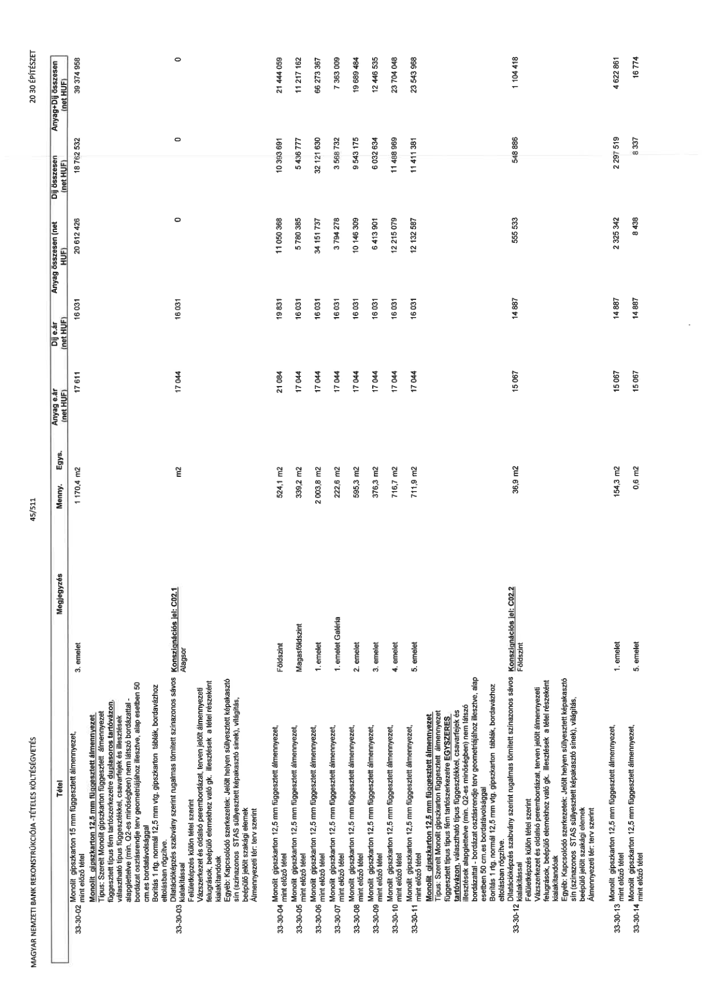

| Tétel | Megjegyzés | Menny. | Egys. | Anyag e.ár (net HUF) | Díj e.ár (net HUF) | Anyag összesen (net HUF) | Díj összesen (net HUF) | Anyag+Díj összesen (net HUF) |
|---|---|---|---|---|---|---|---|---|
| 33-30-02 Monolit gipszkarton 15 mm függesztett álmennyezet, mint előző tétel | 3. emelet | 1 170,4 | m2 | 17 611 | 16 031 | 20 612 426 | 18 762 532 | 39 374 958 |
| 33-30-03 Dilatációképzés szabvány szerint rugalmas tömített színazonos sávos kialakítással | Konszignációs jel: C02.1 Alagsor | NaN | m2 | 17 044 | 16 031 | 0 | 0 | 0 |
| 33-30-04 Monolit gipszkarton 12,5 mm függesztett álmennyezet Típus: Szerelt Monolit gipszkarton függesztett álmennyezet függesztett típus fém tartószerkezetre duplasoros tartóvázon, vázszerkezet (típus) rögzítőelemekkel, csavarfejek és illesztések alapglettelve (min. Q2-es minőségben) nem látszó bordázattal - bordázat osztásrendje terv geometriájához illesztve, alap esetben 50 cm-es bordatávolsággal Borítás 1 rtg. normál 12,5 mm vtg. gipszkarton táblák, bordavázhoz eltolásban rögzítve | Földszint | 524,1 | m2 | 21 084 | 19 831 | 11 050 368 | 10 393 691 | 21 444 059 |
| 33-30-05 Monolit gipszkarton 12,5 mm függesztett álmennyezet, mint előző tétel | Magasföldszint | 339,2 | m2 | 17 044 | 16 031 | 5 780 385 | 5 438 777 | 11 217 162 |
| 33-30-06 Monolit gipszkarton 12,5 mm függesztett álmennyezet, mint előző tétel | 1. emelet | 2 003,8 | m2 | 17 044 | 16 031 | 34 151 737 | 32 121 630 | 66 273 367 |
| 33-30-07 Monolit gipszkarton 12,5 mm függesztett álmennyezet, mint előző tétel | 1. emelet Galéria | 222,6 | m2 | 17 044 | 16 031 | 3 794 278 | 3 568 732 | 7 363 009 |
| 33-30-08 Monolit gipszkarton 12,5 mm függesztett álmennyezet, mint előző tétel | 2. emelet | 595,3 | m2 | 17 044 | 16 031 | 10 146 309 | 9 543 175 | 19 689 484 |
| 33-30-09 Monolit gipszkarton 12,5 mm függesztett álmennyezet, mint előző tétel | 3. emelet | 376,3 | m2 | 17 044 | 16 031 | 6 413 901 | 6 032 634 | 12 446 535 |
| 33-30-10 Monolit gipszkarton 12,5 mm függesztett álmennyezet, mint előző tétel | 4. emelet | 716,7 | m2 | 17 044 | 16 031 | 12 215 079 | 11 489 969 | 23 704 048 |
| 33-30-11 Monolit gipszkarton 12,5 mm függesztett álmennyezet, mint előző tétel | 5. emelet | 711,9 | m2 | 17 044 | 16 031 | 12 132 887 | 11 411 381 | 23 543 968 |
| 33-30-12 Monolit gipszkarton 12,5 mm függesztett álmennyezet EGYSZERES vázszerkezettel Típus: Szerelt Monolit gipszkarton függesztett álmennyezet függesztett típus fém tartószerkezetre EGYSZERES vázszerkezettel rögzítőelemekkel, csavarfejek és illesztések alapglettelve (min. Q2-es minőségben) nem látszó bordázattal - bordázat osztásrendje terv geometriájához illesztve, alap esetben 50 cm-es bordatávolsággal Borítás 1 rtg. normál 12,5 mm vtg. gipszkarton táblák, bordavázhoz eltolásban rögzítve Dilatációképzés szabvány szerint rugalmas tömített színazonos sávos kialakítással | Konszignációs jel: C02.2 Földszint | 36,9 | m2 | 15 067 | 14 887 | 555 333 | 548 896 | 1 104 418 |
| 33-30-13 Monolit gipszkarton 12,5 mm függesztett álmennyezet, mint előző tétel | 1. emelet | 154,3 | m2 | 15 067 | 14 887 | 2 325 342 | 2 297 519 | 4 622 861 |
| 33-30-14 Monolit gipszkarton 12,5 mm függesztett álmennyezet, mint előző tétel | 5. emelet | 0,6 | m2 | 15 067 | 14 887 | 8 438 | 8 337 | 16 774 |
